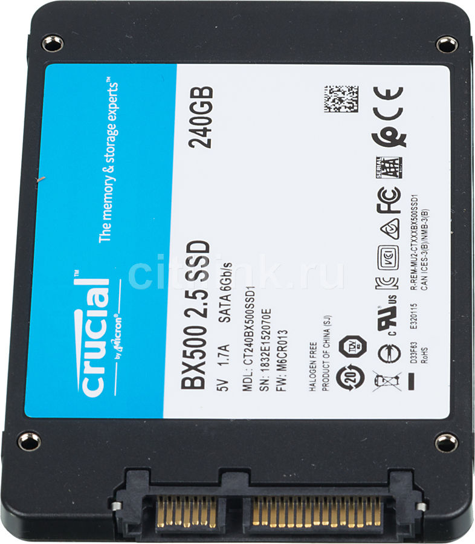
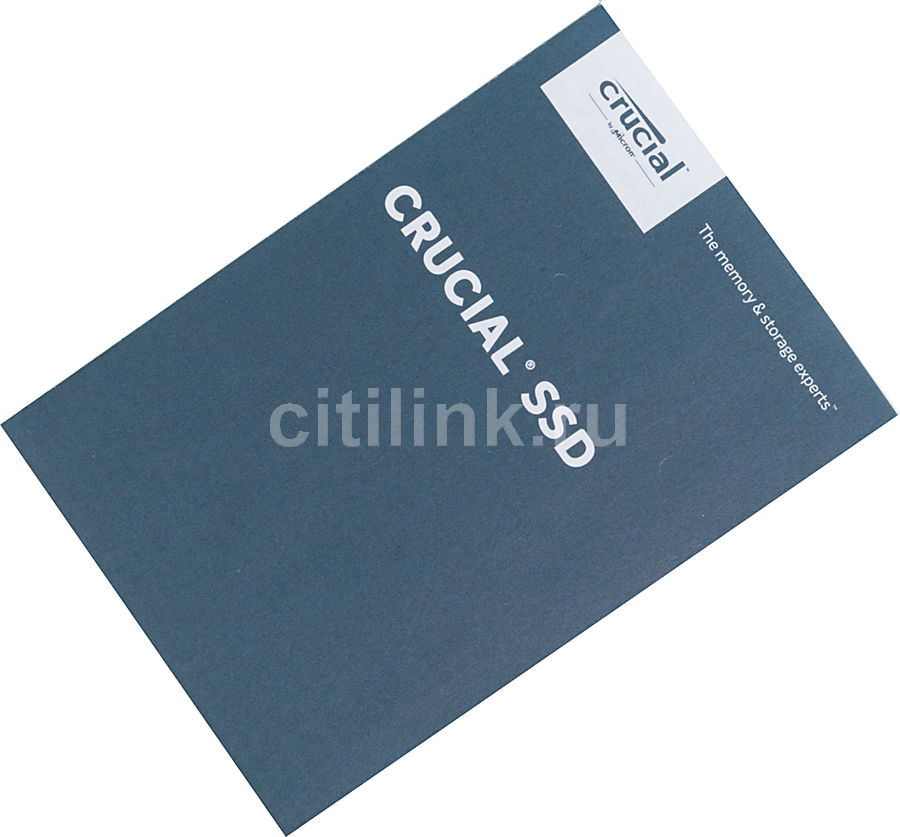

г.Москва, ул.Ленина, 5Б
Интернет магазин техники и электроники

Crucial CT240BX500SSD1

- 
- 
Описание
CRUCIAL BX500 CT240BX500SSD1 – накопитель с интерфейсом SATA III, обеспечивающим скорость чтения до 540 Мб/с. Долгий срок эксплуатации достигается благодаря использованию чипов памяти 3D NAND. При этом время наработки на отказ – 1500000 ч.
Объем накопителя – 240 Гб, на нем без проблем поместятся ОС, офисные приложения и несколько сезонов любимых сериалов в высоком разрешении. Модель имеет компактные размеры и выполнена в форм-факторе 2,5 дюйма, поэтому одинаково хорошо подойдет как для ноутбука, так и для ПК. Все необходимые для крепления отверстия находятся на торцах и нижней стороне устройства.
Характеристики
Тип жесткого диска
Объем накопителя
Форм-фактор
Интерфейс
Максимальная скорость чтения
Максимальная скорость записи
Время наработки на отказ
Тип памяти NAND
Ресурс TBW
Объем накопителя
Форм-фактор
Интерфейс
Максимальная скорость чтения
Максимальная скорость записи
Время наработки на отказ
Тип памяти NAND
Ресурс TBW
SSD
240 ГБ
2.5"
SATA III
540 МБ/с
500 МБ/с
1500000 ч
3D NAND TLC
80 ТБ
240 ГБ
2.5"
SATA III
540 МБ/с
500 МБ/с
1500000 ч
3D NAND TLC
80 ТБ